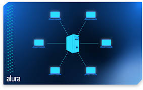
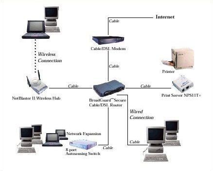

Como Funcionam as Redes de Computadores
Redes de computadores permitem a comunicação entre dispositivos usando protocolos como TCP/IP. Elas funcionam por meio de camadas (modelo OSI), onde cada camada tem uma função específica, como física, enlace, rede, transporte, etc.

Tipos de Redes

- LAN (Local Area Network): Rede local, como em residências ou empresas.
- WAN (Wide Area Network): Abrange grandes áreas geográficas, como a Internet.
- MAN (Metropolitan Area Network): Rede de alcance urbano.
- WLAN (Wireless LAN): Versão sem fio da LAN.
Aplicações das Redes
Redes são usadas em empresas, escolas, bancos, e até em dispositivos IoT. Elas permitem compartilhamento de arquivos, impressoras, acesso remoto, videoconferência e muito mais.
Wallice
Empresa: wallice e seu trabalho
Email: walliceramos3@gmail.com
Telefone: (01)da midia